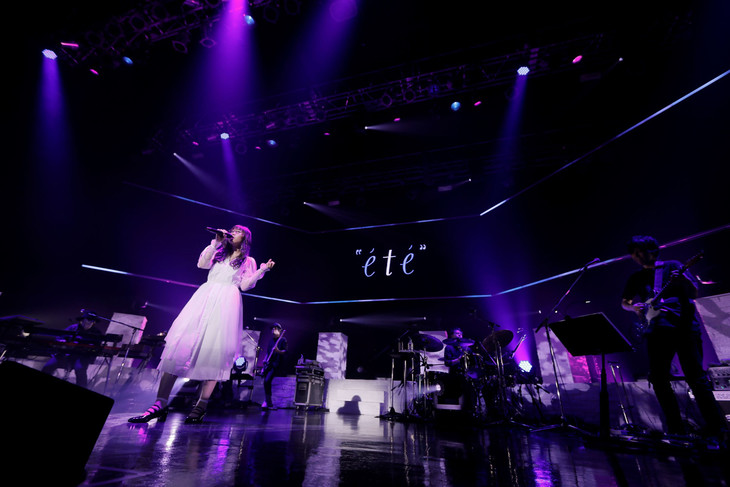
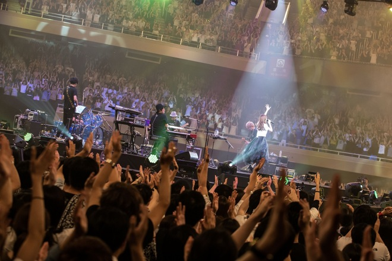

Aimer初のFCツアー開幕、「累-かさね-」主題歌で観客を魅了
2018.08.08
Aimerが昨日8月7日に初のファンクラブツアー「Aimer Fan Club Tour "ete"」の初日公演を愛知・Zepp Nagoyaにて開催した。
ツアーでは東名阪のZeppを回るAimer。初日公演ではシングル曲のカップリングなどコアなファン向けの楽曲が多数パフォーマンスされ、会場は大盛り上がりとなった。さらに彼女は9月5日発売のニューシングル「Black Bird / Tiny Dancers / 思い出は奇麗で」より映画「累-かさね-」の主題歌である「Black Bird」、楽曲オーディション「SonyMusic presents 全国作曲コンクール」で選出された「Tiny Dancers」といった新曲も披露。これまでのワンマンツアーやライブイベントとは異なるセットリストをもとにしたステージで、集まったオーディエンスを楽しませていた。
なおAimerは「Aimer Fan Club Tour "ete"」の大阪公演を本日8月8日にZepp Osaka Bayside、東京公演を8月13日にZepp Tokyoで行う。

Aimer、初の武道館ワンマンで13,000人を魅了
2017.08.30
Aimerが8月29日、自身初となる日本武道館ワンマンライブ＜Aimer Live in 武道館 ”blanc et noir”＞を開催、平日にもかかわらず会場には13,000人ものオーディエンスが来場した。同公演では新曲「花の唄」「ONE」を初披露したほか、5月3日初のベストアルバム『BEST SELECTION “blanc”』『BEST SELECTION “noir”』を掲げて行われた。
会場内はオーディエンスに360度囲まれたセンターステージ。バンドメンバーにも囲まれる形で、白いドレスをまとったAimerが武道館のド真ん中に堂々と立った。1stアルバムの1曲目も飾った「TWINKLE TWINKLE LITTLE STAR」でライブは幕を開け、その優しくも圧倒的な存在感の唄声を会場内に響き渡せつつ、爽やかな疾走感溢れる楽曲「スピカ」を続けて披露。その後は「カタオモイ」「March of Time」など、ベストアルバム『BEST SELECTION “blanc”』収録の優しいバラードの数々を披露し、“blanc(白色)”をテーマに掲げた前半は「蝶々結び」で感動的に幕を閉じた。
数分間の転換の後に、漆黒の闇に包まれた会場の中心には黒いドレスを身にまとったAimerが再び登場。TK(凛として時雨)が楽曲提供した「us」を奏で、前半から一変してパワフルでエモーションな後半“noir(黒色)”が幕を開けた。
ライブ終盤には、ベストアルバムから“新規一転”という気持ちを込めたという「zero」もパフォーマンスし、4thアルバムのラストを飾った「Stars in the rain」で本編を締めくくった。
鳴り止まない拍手にこたえて、「花の唄」同様に最新シングルに収録される新曲「ONE」をアンコールで初披露。Aimerとしては珍しいアップテンポナンバーに会場はこの日一番の一体感に包まれた。アンコールの最後はデビュー曲「六等星の夜」。同楽曲が新たなアレンジで生まれ変わり、最新シングルにも収録される「六等星の夜 Magic Blue ver.」がコニカミノルタプラネタリウム“天空”リニューアルテーマソングとなることも発表された。
なお、今回のライブは全国26か所の映画館ならびに香港、台湾、韓国でもライブビューイングにて生中継が実施された。香港では開催前より全会場が完売となっており、武道館会場内、日本全国、さらには海外に渡って、Aimer初の日本武道館ワンマンライブは大盛況の後に幕を閉じた。